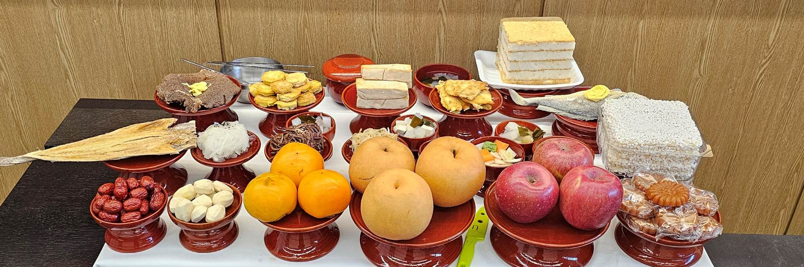
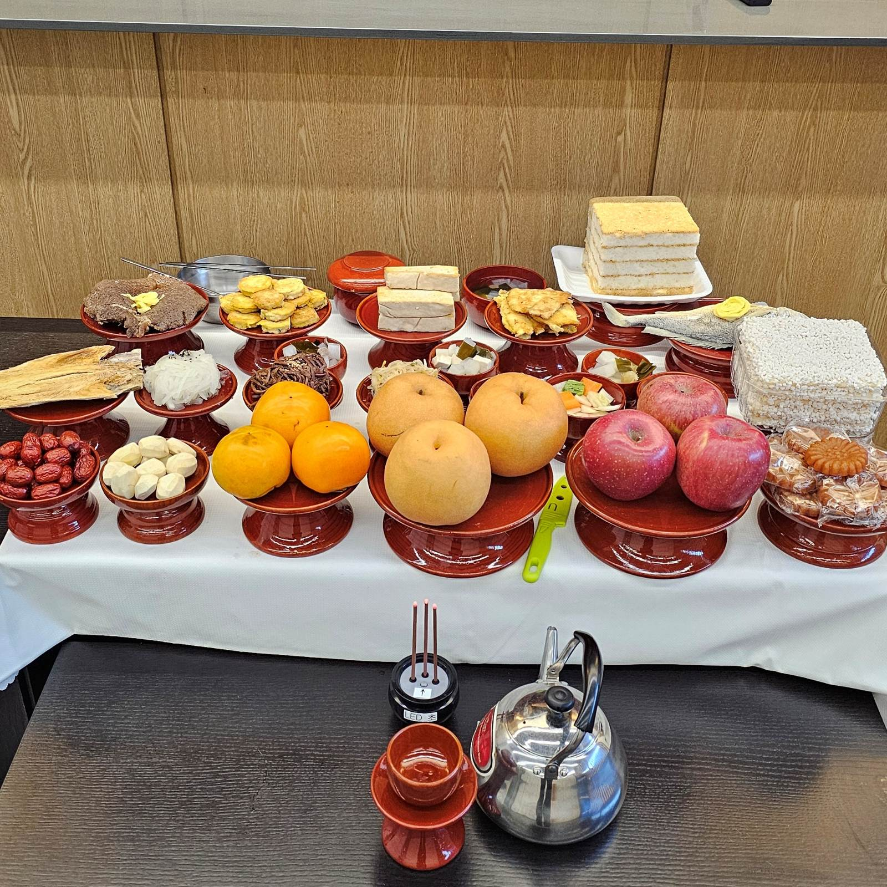

［제물상차림］
정성스레 차린 제물상을 묘지 · 문중 · 자택까지 직접 배송하고 진설해 드립니다. 24기 정식 차림 기준.
시제 · 묘지제사 · 문중행사 · 기제
사진의 정식 차림을 기준으로 하되, 인원과 장소에 따라 품목은 협의해 조정해 드립니다.
정성스레 차린 제물상을 묘지 · 문중 · 자택까지 직접 배송하고 진설해 드립니다. 24기 정식 차림 기준.
전기 · 수도가 없는 현장에도 조리 설비를 갖추고 들어가 따뜻한 국과 밥을 바로 올려 드립니다.
시무식 · 고사, 가족 잔치, 야외 단체식사에 맞춰 상차림과 인력까지 함께 준비합니다.
행사 성격 · 날짜 · 장소 · 인원을 여쭙고 가능한 차림을 안내드립니다.
품목표와 금액을 문자로 보내드리고, 조정이 필요한 부분은 함께 맞춥니다.
전날 장을 보고 당일 새벽 조리해, 시간 맞춰 현장에서 직접 차려 올립니다.
행사가 끝나면 기물과 잔반까지 정리해 가져갑니다. 뒷정리 걱정은 두지 않으셔도 됩니다.
모두 실제 행사 현장에서 촬영한 사진입니다


산소까지 올라오는 길이 험한데도 시간 딱 맞춰 오셔서 상을 다 차려 놓으셨습니다. 어른들이 제일 만족하셨습니다.
현장 120명 식사를 밥차 한 대로 해결했습니다. 국이 끝까지 따뜻했다는 말을 직원들에게 들었습니다.
시무식 고사상을 급하게 부탁드렸는데 품목을 먼저 정리해 보내주셔서 마음이 놓였습니다. 뒷정리까지 깔끔했습니다.
날짜가 정해지지 않았어도 괜찮습니다. 먼저 전화 주시면 가능한 차림과 금액대를 편하게 안내드립니다.